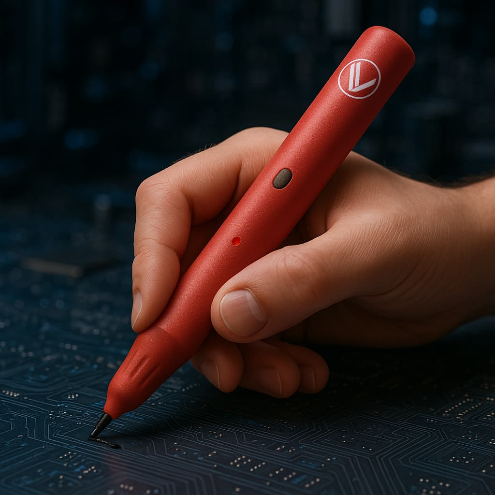
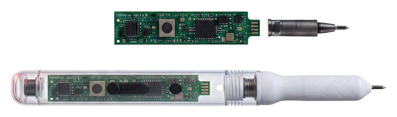

Vahini · the sensor pen
The pen that understands how you write.
A patented dual-IMU sensor pen that captures motion on ordinary paper. No tablet. No special notebook. No screen. It looks like a pen, thinks like a computer, and feels like every pen you've ever used.

We didn't want another smart pen.
Every "smart" pen asks you to change something, charge a dock, buy special paper, stare at a screen. We wanted the opposite: all the intelligence, none of the friction. So we removed everything that gets in the way of simply writing.
How Vahini works
Four steps, from your hand to real insight.
Write
Pick up Vahini and write on any ordinary paper, exactly as you always do.
Capture motion
Dual sensors read pressure, tilt, speed and writing flow 208 times a second.
AI understands
Our engine reconstructs the strokes and reads how the writing was made.
Personalised support
You get a clear report and targeted practice, the loop that makes writing better.
Inside Vahini
Engineering you can feel, not see.
Every decision inside the barrel answers one question: how do you read writing on ordinary paper, with no camera and no screen? Here's how.

The specifications
A dense sensor stack in a familiar pen.
Performance
- 208 HzMotion sampling rate
- 16 axesCaptured live, dual-IMU
- Tip forcePressure dynamics sensing
Intelligence
- Kalman fusionClean, stable trajectory
- Motion reconstructionStrokes rebuilt from signal
- 5 Indic scriptsAI-ready, multi-script
Practical
- Ordinary paperNo dot-pattern, no tablet
- Standard refillWrites like any ballpoint
- Bluetooth LELow-power wireless MCU
Signal intelligence
What Vahini understands.
Six dimensions of how a person writes, read from motion, invisible on a finished page.
Writing Flow
The flow and pace of strokes, fluent and even, or hesitant and effortful.
Pressure
How firmly the pen presses, light and controlled, or heavy and strained.
Stability
Steadiness of the hand, smooth control versus shake and wobble.
Speed
How quickly letters form, and whether pace holds up at exam length.
Fine motor
The micro-movements behind each letter, fatigue, smoothness and control.
Consistency
How repeatable the writing is, letter to letter, line to line, day to day.
The big question
Why didn't we just build another tablet pen?
Because paper is where children actually learn, where exams happen, and where worksheets already live. A screen changes the act of writing. Vahini doesn't.
| Tablet pen | Vahini | |
|---|---|---|
| Needs a screen | Yes | |
| Battery anxiety | Yes | |
| Familiar writing feel | ✕ | |
| Works on existing worksheets | ✕ | |
| Ready for paper exams | ✕ | |
| Classroom-friendly cost | ✕ |
Engineering challenges
Six hard problems, by design.
Reading handwriting from motion alone, no camera, no special paper, means solving things most pens never attempt.
Vahini solves all six, in a pen that just feels like a pen.
The roadmap
Vahini v1 today. A classroom platform next.
v1 is the pen for the individual writer. v2 takes the same sensing into schools, and turns one pen into a connected classroom.
The flagship dual-IMU sensor pen for the individual writer.
- Dual-IMU sensing, 16 axes at 208 Hz
- Writes on any ordinary paper
- Pairs 1:1 with the Vahini Analyser
- Privacy-safe, captures motion, not words
The same intelligence, built into a connected classroom platform.
- Multi-pen classroom, many pens, one hub
- Teacher dashboard & live class analytics
- OTA firmware & fleet management
- School charging dock for daily use
The journey
From an idea to a school edition.
Experience writing, measured.
Vahini reads how you write, on the paper you already use. Reserve a unit, or watch it in action.